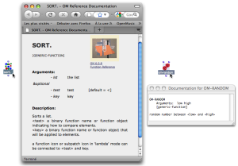

OpenMusic DocumentationHiérarchie de section : OM 6.6 User Manual > Visual Programming I > Documentation and Info
OpenMusic DocumentationHiérarchie de section : OM 6.6 User Manual > Visual Programming I > Documentation and Info
Navigation : page précédente | page suivante
Attention, votre navigateur ne supporte pas le javascript ou celui-ci à été désactivé. Certaines fonctionnalités de ce guide sont restreintes.
Documentation and Info
There exist several way to get information about a box in an OM patch, principally :
- The reference documentation
- The "Info" window
- The tutorial patches
Reference Documentation
The reference documentation gives access to full information about a function or class.
To access the reference of an item select the box and :
The documentation, when available, will pop up in a new window as an HTML or simple text window. |

|
{kind=link}
Info Window
The Info window provides various information, depending on the type of the selected item, and possible short documentation.
To open the
|
{kind=link}
Tutorial Patches
Tutorials are commented example patches. They are OM internal patches which cannot be modified and saved. Nevertheless, their content can be copied in another patch.
To open the related tutorial patch of an item, select it and
The tutorial will open as a new patch. |
{kind=link}
Références :
Plan :
Navigation : page précédente | page suivante
A propos...(c) Ircam - Centre Pompidou